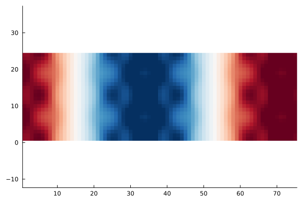

Analysing SCF convergence


The goal of this example is to explain the differing convergence behaviour of SCF algorithms depending on the choice of the mixing. For this we look at the eigenpairs of the Jacobian governing the SCF convergence, that is
\[1 - α P^{-1} \varepsilon^\dagger \qquad \text{with} \qquad \varepsilon^\dagger = (1-\chi_0 K).\]
where $α$ is the damping $P^{-1}$ is the mixing preconditioner (e.g. KerkerMixing, LdosMixing) and $\varepsilon^\dagger$ is the dielectric operator.
We thus investigate the largest and smallest eigenvalues of $(P^{-1} \varepsilon^\dagger)$ and $\varepsilon^\dagger$. The ratio of largest to smallest eigenvalue of this operator is the condition number
\[\kappa = \frac{\lambda_\text{max}}{\lambda_\text{min}},\]
which can be related to the rate of convergence of the SCF. The smaller the condition number, the faster the convergence. For more details on SCF methods, see Self-consistent field methods.
For our investigation we consider a crude aluminium setup:
using AtomsBuilder
using DFTK
system_Al = bulk(:Al; cubic=true) * (4, 1, 1)FlexibleSystem(Al₁₆, periodicity = TTT):
cell_vectors : [ 16.2 0 0;
0 4.05 0;
0 0 4.05]u"Å"
and we discretise:
using PseudoPotentialData
pseudopotentials = PseudoFamily("dojo.nc.sr.lda.v0_4_1.standard.upf")
model_Al = model_DFT(system_Al; functionals=LDA(), temperature=1e-3,
symmetries=false, pseudopotentials)
basis_Al = PlaneWaveBasis(model_Al; Ecut=7, kgrid=[1, 1, 1]);On aluminium (a metal) already for moderate system sizes (like the 8 layers we consider here) the convergence without mixing / preconditioner is slow:
# Note: DFTK uses the self-adapting LdosMixing() by default, so to truly disable
# any preconditioning, we need to supply `mixing=SimpleMixing()` explicitly.
scfres_Al = self_consistent_field(basis_Al; tol=1e-12, mixing=SimpleMixing());n Energy log10(ΔE) log10(Δρ) Diag Δtime
--- --------------- --------- --------- ---- ------
1 -36.73346395860 -0.88 11.0 376ms
2 -36.70467826354 + -1.54 -1.56 1.0 101ms
3 +0.860301555045 + 1.57 -0.28 7.0 210ms
4 -36.55965679320 1.57 -1.17 6.0 220ms
5 -36.56119406287 -2.81 -1.37 3.0 142ms
6 -36.05206337485 + -0.29 -1.15 3.0 143ms
7 -36.70613617598 -0.18 -1.66 3.0 150ms
8 -36.74166721318 -1.45 -2.25 1.0 97.0ms
9 -36.74036513290 + -2.89 -2.13 2.0 139ms
10 -36.74051012856 -3.84 -2.06 2.0 128ms
11 -36.74198583524 -2.83 -2.46 2.0 134ms
12 -36.74240571970 -3.38 -2.77 1.0 99.4ms
13 -36.74246304395 -4.24 -3.07 3.0 124ms
14 -36.74246429816 -5.90 -3.05 2.0 120ms
15 -36.74222819499 + -3.63 -2.86 2.0 133ms
16 -36.74246048406 -3.63 -3.33 3.0 136ms
17 -36.74238848369 + -4.14 -2.95 2.0 141ms
18 -36.74232300207 + -4.18 -2.97 4.0 161ms
19 -36.74247755462 -3.81 -3.77 2.0 133ms
20 -36.74248016072 -5.58 -3.86 2.0 127ms
21 -36.74248060124 -6.36 -4.35 2.0 107ms
22 -36.74248064023 -7.41 -4.45 2.0 142ms
23 -36.74248049565 + -6.84 -4.16 2.0 129ms
24 -36.74248066673 -6.77 -4.84 2.0 131ms
25 -36.74248067195 -8.28 -5.28 2.0 112ms
26 -36.74248067177 + -9.74 -5.32 2.0 134ms
27 -36.74248067212 -9.45 -5.49 2.0 106ms
28 -36.74248067244 -9.50 -5.72 2.0 114ms
29 -36.74248067042 + -8.70 -5.38 3.0 151ms
30 -36.74248067263 -8.66 -6.18 3.0 147ms
31 -36.74248067185 + -9.10 -5.60 3.0 162ms
32 -36.74248067242 -9.24 -5.82 4.0 168ms
33 -36.74248067266 -9.62 -6.30 2.0 125ms
34 -36.74248067268 -10.77 -6.78 2.0 132ms
35 -36.74248067268 -11.90 -7.26 2.0 136ms
36 -36.74248067268 -12.85 -7.36 2.0 107ms
37 -36.74248067268 -14.15 -7.79 1.0 106ms
38 -36.74248067268 -13.85 -7.80 3.0 142ms
39 -36.74248067268 + -Inf -8.13 1.0 106ms
40 -36.74248067268 -14.15 -8.12 2.0 122ms
41 -36.74248067268 + -14.15 -8.47 2.0 128ms
42 -36.74248067268 -14.15 -8.28 3.0 141ms
43 -36.74248067268 + -Inf -8.29 3.0 149ms
44 -36.74248067268 + -Inf -9.19 3.0 126ms
45 -36.74248067268 + -Inf -9.07 3.0 169ms
46 -36.74248067268 + -Inf -9.31 2.0 115ms
47 -36.74248067268 + -Inf -9.65 2.0 114ms
48 -36.74248067268 + -Inf -9.72 3.0 150ms
49 -36.74248067268 + -Inf -9.94 2.0 115ms
50 -36.74248067268 + -Inf -9.99 2.0 142ms
51 -36.74248067268 -13.85 -10.43 3.0 124ms
52 -36.74248067268 + -13.85 -10.64 2.0 118ms
53 -36.74248067268 + -Inf -10.50 2.0 134ms
54 -36.74248067268 + -14.15 -10.65 2.0 134ms
55 -36.74248067268 -13.67 -10.79 2.0 116ms
56 -36.74248067268 + -13.85 -10.76 2.0 130ms
57 -36.74248067268 -14.15 -10.70 2.0 126ms
58 -36.74248067268 + -14.15 -11.09 2.0 123ms
59 -36.74248067268 -14.15 -11.34 3.0 137ms
60 -36.74248067268 -14.15 -11.00 2.0 144ms
61 -36.74248067268 + -13.85 -11.78 3.0 145ms
62 -36.74248067268 -13.85 -11.75 2.0 125ms
63 -36.74248067268 + -13.85 -12.05 3.0 130mswhile when using the Kerker preconditioner it is much faster:
scfres_Al = self_consistent_field(basis_Al; tol=1e-12, mixing=KerkerMixing());n Energy log10(ΔE) log10(Δρ) Diag Δtime
--- --------------- --------- --------- ---- ------
1 -36.73086527261 -0.88 14.0 375ms
2 -36.73615073798 -2.28 -1.36 1.0 95.8ms
3 -36.73206584399 + -2.39 -1.69 3.0 150ms
4 -36.74149105881 -2.03 -2.02 1.0 95.4ms
5 -36.74108616481 + -3.39 -2.37 3.0 126ms
6 -36.74237173940 -2.89 -2.49 3.0 139ms
7 -36.74225195464 + -3.92 -2.69 1.0 104ms
8 -36.74246805185 -3.67 -3.17 2.0 116ms
9 -36.74247379990 -5.24 -3.32 3.0 139ms
10 -36.74247948360 -5.25 -3.65 1.0 106ms
11 -36.74248011928 -6.20 -3.92 3.0 137ms
12 -36.74248063110 -6.29 -4.38 2.0 143ms
13 -36.74248059550 + -7.45 -4.58 3.0 120ms
14 -36.74248067162 -7.12 -5.16 2.0 141ms
15 -36.74248067205 -9.36 -5.51 2.0 109ms
16 -36.74248067263 -9.24 -6.03 3.0 143ms
17 -36.74248067267 -10.40 -6.32 2.0 135ms
18 -36.74248067268 -10.99 -6.85 2.0 112ms
19 -36.74248067268 -12.10 -7.11 3.0 140ms
20 -36.74248067268 -13.55 -7.58 2.0 113ms
21 -36.74248067268 -13.85 -7.71 3.0 140ms
22 -36.74248067268 + -Inf -8.05 1.0 107ms
23 -36.74248067268 + -14.15 -8.57 4.0 116ms
24 -36.74248067268 -13.85 -8.65 3.0 140ms
25 -36.74248067268 + -14.15 -8.98 1.0 98.3ms
26 -36.74248067268 + -Inf -9.42 2.0 112ms
27 -36.74248067268 + -Inf -9.81 4.0 143ms
28 -36.74248067268 + -Inf -9.94 3.0 122ms
29 -36.74248067268 + -Inf -10.09 3.0 128ms
30 -36.74248067268 -13.85 -10.44 2.0 111ms
31 -36.74248067268 + -13.85 -10.87 3.0 132ms
32 -36.74248067268 + -Inf -11.09 2.0 139ms
33 -36.74248067268 + -14.15 -11.68 2.0 105ms
34 -36.74248067268 -13.67 -11.90 4.0 165ms
35 -36.74248067268 + -13.85 -12.04 2.0 117msGiven this scfres_Al we construct functions representing $\varepsilon^\dagger$ and $P^{-1}$:
# Function, which applies P^{-1} for the case of KerkerMixing
Pinv_Kerker(δρ) = DFTK.mix_density(KerkerMixing(), basis_Al, δρ)
# Function which applies ε† = 1 - χ0 K
function epsilon(δρ)
δV = apply_kernel(basis_Al, δρ; ρ=scfres_Al.ρ)
χ0δV = apply_χ0(scfres_Al, δV).δρ
δρ - χ0δV
endepsilon (generic function with 1 method)With these functions available we can now compute the desired eigenvalues. For simplicity we only consider the first few largest ones.
using KrylovKit
λ_Simple, X_Simple = eigsolve(epsilon, randn(size(scfres_Al.ρ)), 3, :LM;
tol=1e-3, eager=true, verbosity=2)
λ_Simple_max = maximum(real.(λ_Simple))44.02448898032724The smallest eigenvalue is a bit more tricky to obtain, so we will just assume
λ_Simple_min = 0.9520.952This makes the condition number around 30:
cond_Simple = λ_Simple_max / λ_Simple_min46.24421111378912This does not sound large compared to the condition numbers you might know from linear systems.
However, this is sufficient to cause a notable slowdown, which would be even more pronounced if we did not use Anderson, since we also would need to drastically reduce the damping (try it!).
Having computed the eigenvalues of the dielectric matrix we can now also look at the eigenmodes, which are responsible for the bad convergence behaviour. The largest eigenmode for example:
using Statistics
using Plots
mode_xy = mean(real.(X_Simple[1]), dims=3)[:, :, 1, 1] # Average along z axis
heatmap(mode_xy', c=:RdBu_11, aspect_ratio=1, grid=false,
legend=false, clim=(-0.006, 0.006))
This mode can be physically interpreted as the reason why this SCF converges slowly. For example in this case it displays a displacement of electron density from the centre to the extremal parts of the unit cell. This phenomenon is called charge-sloshing.
We repeat the exercise for the Kerker-preconditioned dielectric operator:
λ_Kerker, X_Kerker = eigsolve(Pinv_Kerker ∘ epsilon,
randn(size(scfres_Al.ρ)), 3, :LM;
tol=1e-3, eager=true, verbosity=2)
mode_xy = mean(real.(X_Kerker[1]), dims=3)[:, :, 1, 1] # Average along z axis
heatmap(mode_xy', c=:RdBu_11, aspect_ratio=1, grid=false,
legend=false, clim=(-0.006, 0.006))Clearly the charge-sloshing mode is no longer dominating.
The largest eigenvalue is now
maximum(real.(λ_Kerker))4.7235998373003305Since the smallest eigenvalue in this case remains of similar size (it is now around 0.8), this implies that the conditioning improves noticeably when KerkerMixing is used.
Note: Since LdosMixing requires solving a linear system at each application of $P^{-1}$, determining the eigenvalues of $P^{-1} \varepsilon^\dagger$ is slightly more expensive and thus not shown. The results are similar to KerkerMixing, however.
We could repeat the exercise for an insulating system (e.g. a Helium chain). In this case you would notice that the condition number without mixing is actually smaller than the condition number with Kerker mixing. In other words employing Kerker mixing makes the convergence worse. A closer investigation of the eigenvalues shows that Kerker mixing reduces the smallest eigenvalue of the dielectric operator this time, while keeping the largest value unchanged. Overall the conditioning thus workens.
Takeaways:
- For metals the conditioning of the dielectric matrix increases steeply with system size.
- The Kerker preconditioner tames this and makes SCFs on large metallic systems feasible by keeping the condition number of order 1.
- For insulating systems the best approach is to not use any mixing.
- The ideal mixing strongly depends on the dielectric properties of system which is studied (metal versus insulator versus semiconductor).